Elms Sans is a utilitarian geometric sans serif typeface designed for clarity, consistency, and long-term adaptability. Developed to perform reliably across a wide range of modern applications—from digital interfaces to print environments—it brings a quiet precision to design systems.
The design draws from early geometric models, with particular attention to rhythm, openness, and optical clarity. While maintaining functional neutrality, Elms Sans introduces subtle warmth in its proportions, making it suitable for both display and text use.
Elms Sans includes two variable axes, wght (weight), and ital (italics) and spans nine weights: Thin, ExtraLight, Light, Regular, Medium, SemiBold, Bold, ExtraBold and Black, created with 3 masters.
The name Elms is a dedication to three individuals whose mentorship shaped the designer’s career—Elijah Affi, Makua Afiomah, and Solomon Dawudu. It also references the elm tree, often associated with craftsmanship, quiet strength, and resilience—values that guided the design process, both in form and function.
The current version supports Latin-script languages, with additional Sub-Saharan African Latin support in development.
To contribute, see github.com/mara-aa/elms-sans.
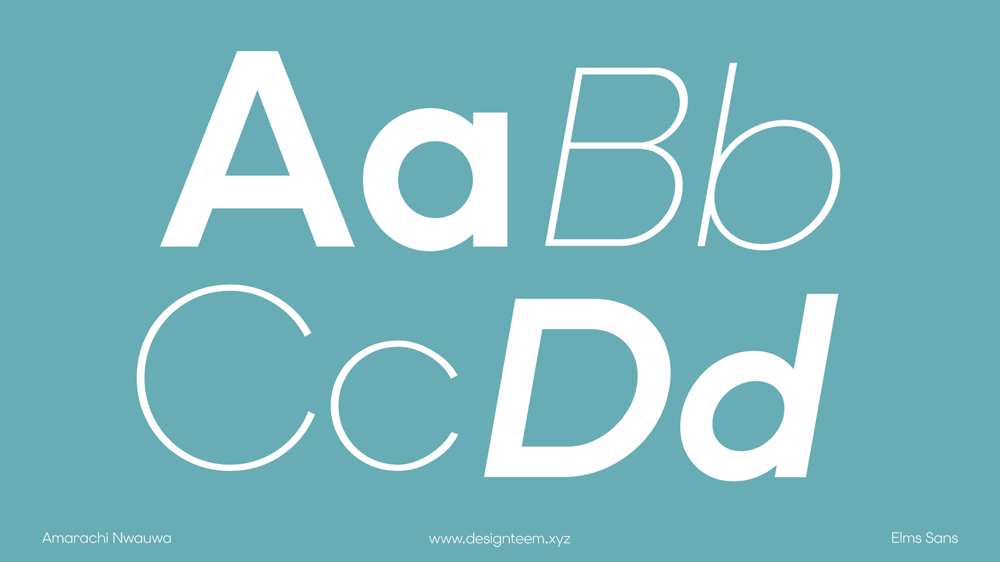 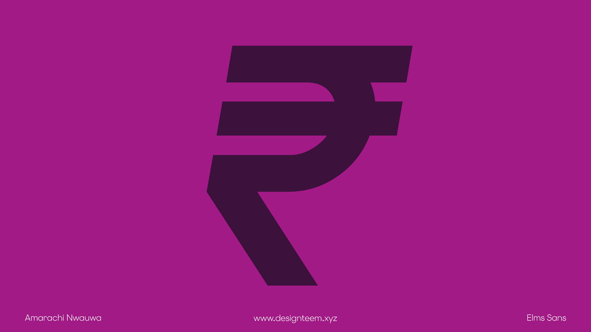 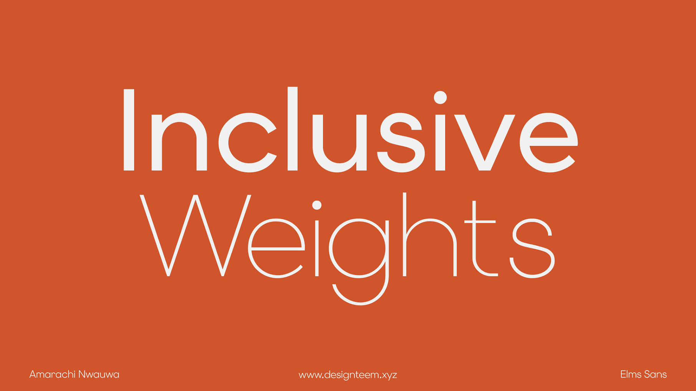 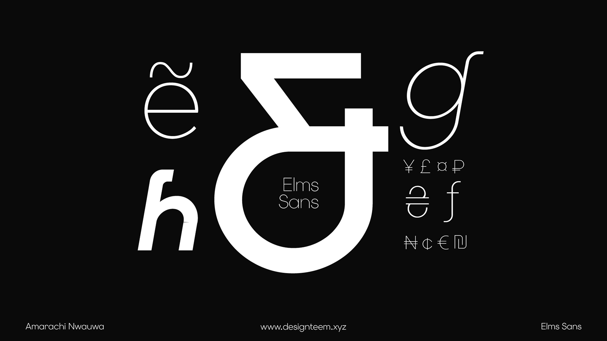 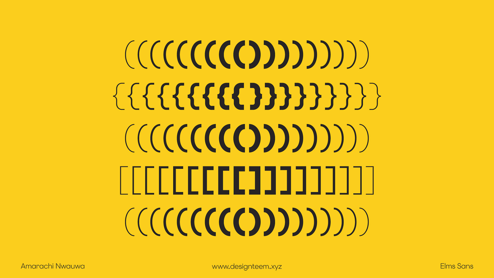 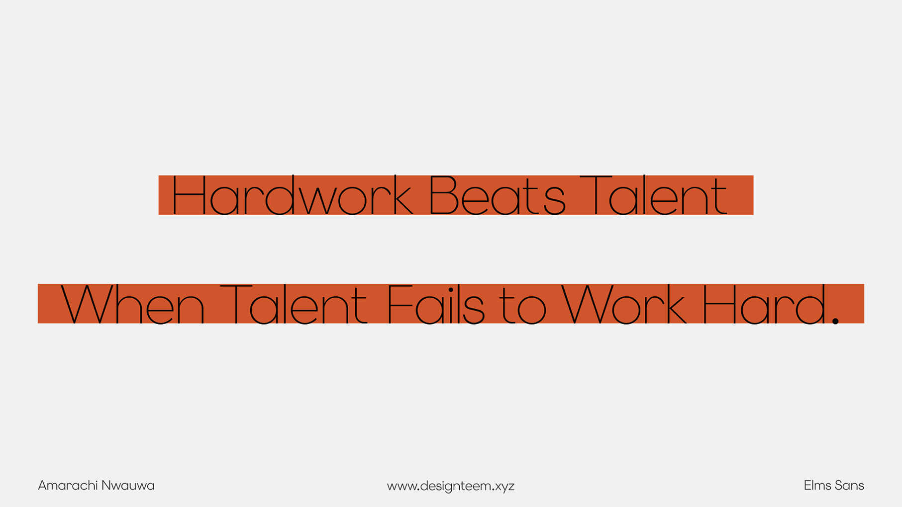 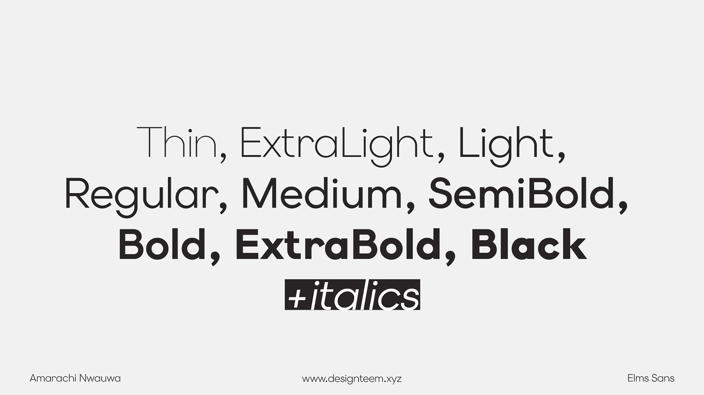 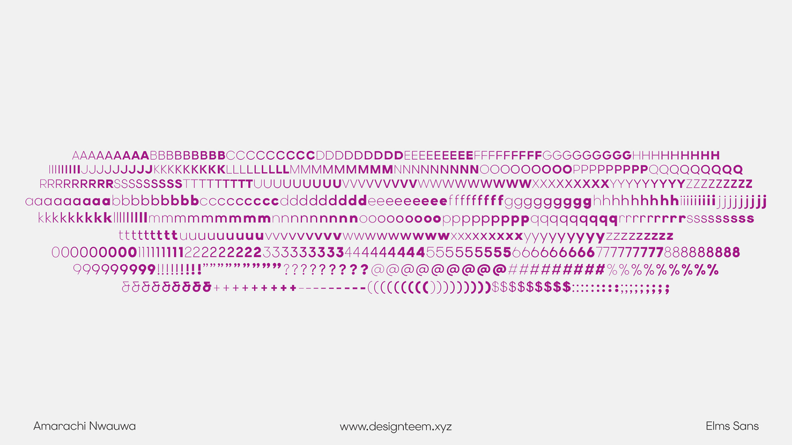 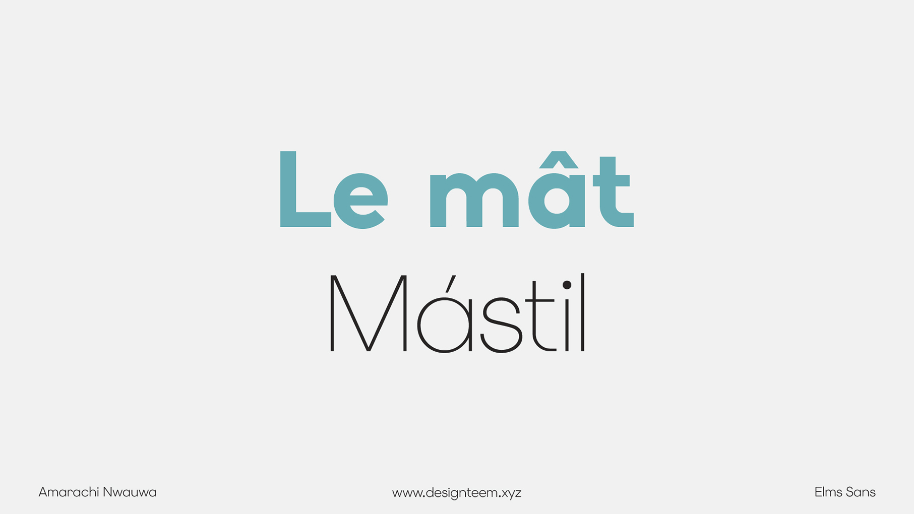 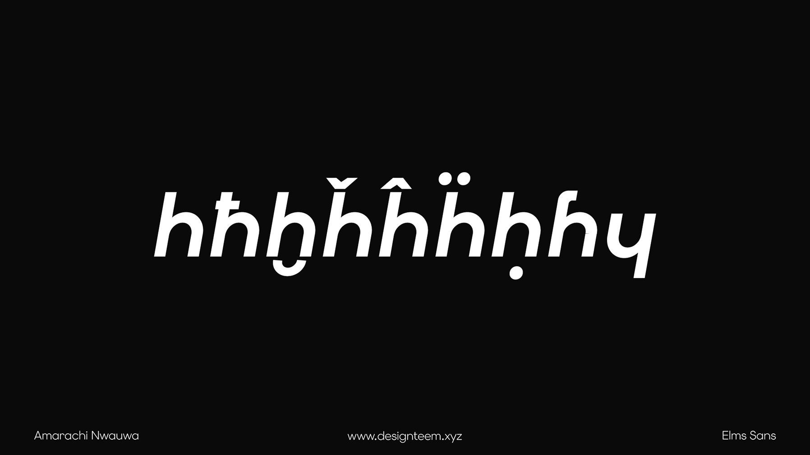
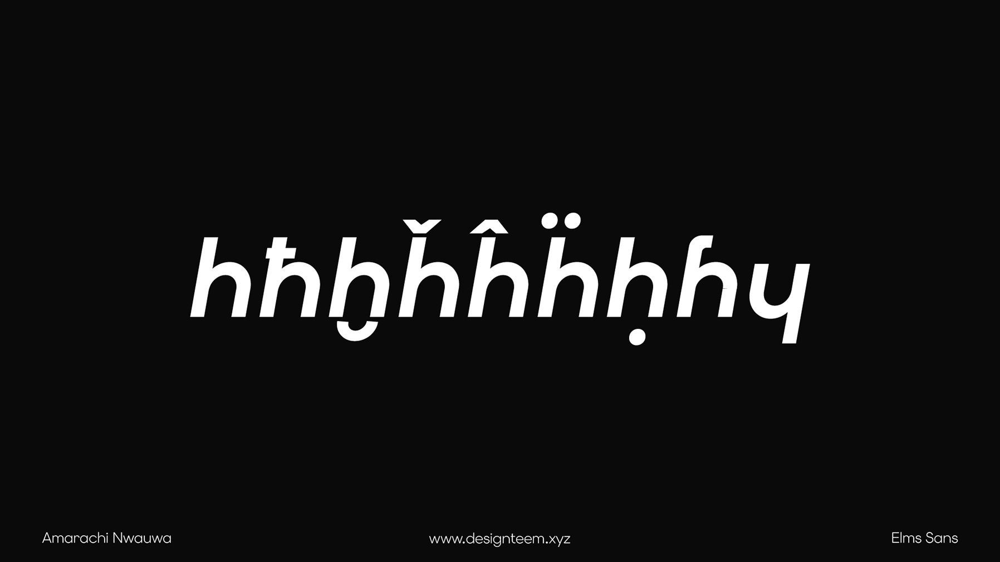